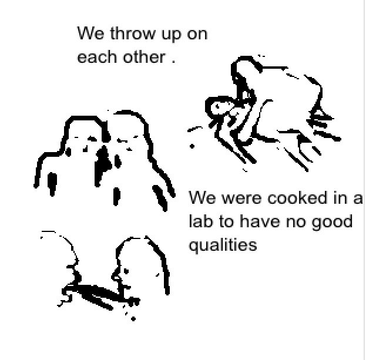

(6 pm) the way i look least often is slightly up. im doing that now as i type this and watch a video about cocktails. im getting ideas. im always getting ideas and i dont know when they will stop. when i look slightly up i tend to feel a little sick. it instills a very specific feeling of distance that makes me so so dizzy. the intense emotions i feel have shifted since starting lexapro and since the summer heat started. i dont really freak out anymore (for better or worse). im so much more confused and dizzy now more than ive ever been. since ive ever been since last summer. why does the summer do this to me, is it the excessive sun maybe.
(6 pm again) i take biotin that i steal from whole foods so that my nails grows faster so that i can chew them more often. when im stressed and anxious i grab my stigmata necklace and focus on the garnet in the middle. today i noticed that the garnet is filthy. it's red in the way a river's clay will be red. its filthy and covered in silver oxidation. when i rub it the oxidation and red transfer to me. im so close to tired in a way that feels inescapable, but i still smile when old men on the street ask me for directions.
(afternoon) happy birthday kim i hope youre well. i hope you know i miss you and i hope you know more than i could say here if given years and years to type. i hope everyone knows this but especially you. im missing your birthday because everyone and everything is so far away. its never just a minute its never just an hour its always your entire life.
